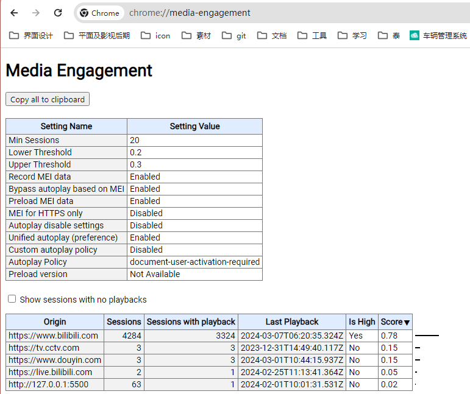

学前端？？学后端！！
使用场景是用于展示搜索结果的关键字
placeholder:提示文本，用于文字输入类表单控件
required:必填项，用于除按扭外的表单控件
autofocus:自动获取焦点
autocomplete:自动完成(保存输入框的值),用于文字输入框，不可用于密码输入框和多行输入框
patten:填写正则表达式，用于表单验证，注意:多行输入不可用，且不验证空项，一般与require一起用
在form中写上novalidate，则在提交时就不做任何验证
autoplay:自动播放，生效的前提是muted,即静音后才能自动播放
当然，有些时候也可以有声音的自动播放，前提是媒体参与度要够高chrome://media-engagement/
音频标签即使静音了也无法自动播放(现在好像是可以了20240308)
1.contenteditable
表示元素是否可被用户编辑，可选值如下：
true ：可编辑
false ：不可编辑
2.draggable
表示元素可以被拖动，可选值如下：
true ：可拖动
false ：不可拖动
3.hidden 隐藏元素,与display:none效果一致，不占位
4.spellcheck
规定是否对元素进行拼写和语法检查，可选值如下：
true ：检查
false ：不检查
5.contextmenu 规定元素的上下文菜单，在用户鼠标右键点击元素时显示。
6.data-* 用于存储页面的私有定制数据。